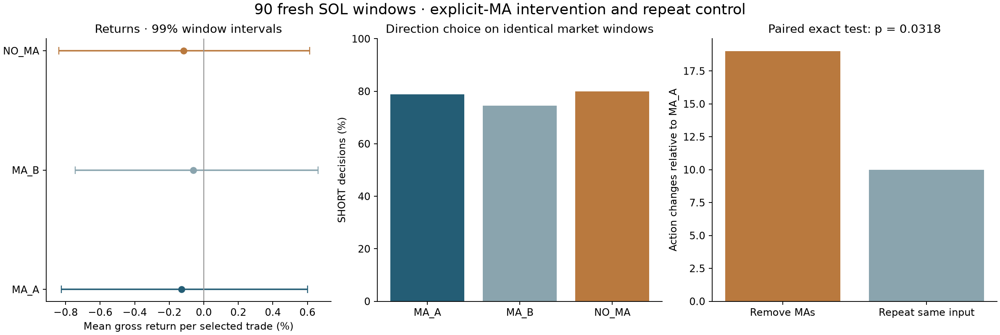

NAI Trading · completed research · zero-cost gross returns
A directional tendency is visible.
A profitable inverse edge is not verified.
Two frozen fresh-target tests are complete. Neither tested reversal strategy passed verification. Removing explicit MAs did not remove the model’s bearish tendency or establish a return improvement.
771 /800physical calls used
770valid decisions
215market times
29calls unused
1 · Four-asset reversal test
500snapshots at125 fresh calendar times. Long and short rules fixed before outcomes; price controls, delayed entries and block/quarter uncertainty included.
Long:+0.361%gross/trade, but concentrated and uncertain.
Short:−0.013%, despite57.3%wins.
Open all500 snapshots and trades2 · Paired MA intervention
90 further fresh SOL windows. Three isolated opinions each: original MAs, identical repeat, and explicit MAs removed. Other inputs held fixed.
Original long rule:−0.130%gross/trade.
MAs removed:−0.117%. SHORT calls71→72.
Open90 paired windows and270 opinionsThe findings that matter
Terra chose SHORT on all175 charts below both intraday averages in the500-window study. That decision pattern did not become a reliable inverse return. The initially positive long result drew69.2% of summed gain from one calendar episode and turned negative after removing its top three episodes.
In the controlled follow-up, MA removal changed19/90 actions versus10/90 from identical-input repetition. The exact paired p-value was.0318, missing the frozen.01 threshold. Changes went both ways: nine SHORT→LONG and ten LONG→SHORT. The bearish tendency persisted.

| Policy or arm | Trades | Gross/trade | Status |
|---|
| Four-asset long reversal | 101 | +0.3607% | Not verified |
| Four-asset ATR short | 171 | −0.0129% | Failed |
| Fresh SOL primary MA_A | 71 | −0.1297% | Failed |
| Identical repeat MA_B | 67 | −0.0608% | Diagnostic |
| Explicit MAs removed | 72 | −0.1167% | No established improvement |
Unlevered returns, costs set to zero. Simultaneous assets and repeated opinions are not independent market observations. Earlier studies and failed candidates are preserved. These historical results are not a live profitability claim; no actual orders were placed.
Reproducible records
Full findings · Completion and preservation audit · Every physical call reservation
Four-asset locked protocol · Paired-study locked protocol · Four-asset independent audit · Paired independent audit
Shorter-horizon diagnostic · Risk-normalization diagnostic